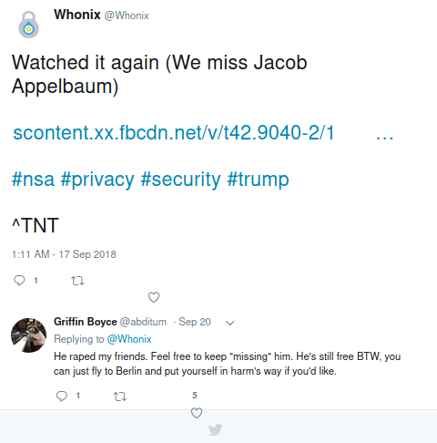
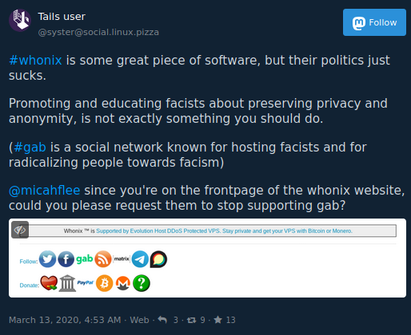
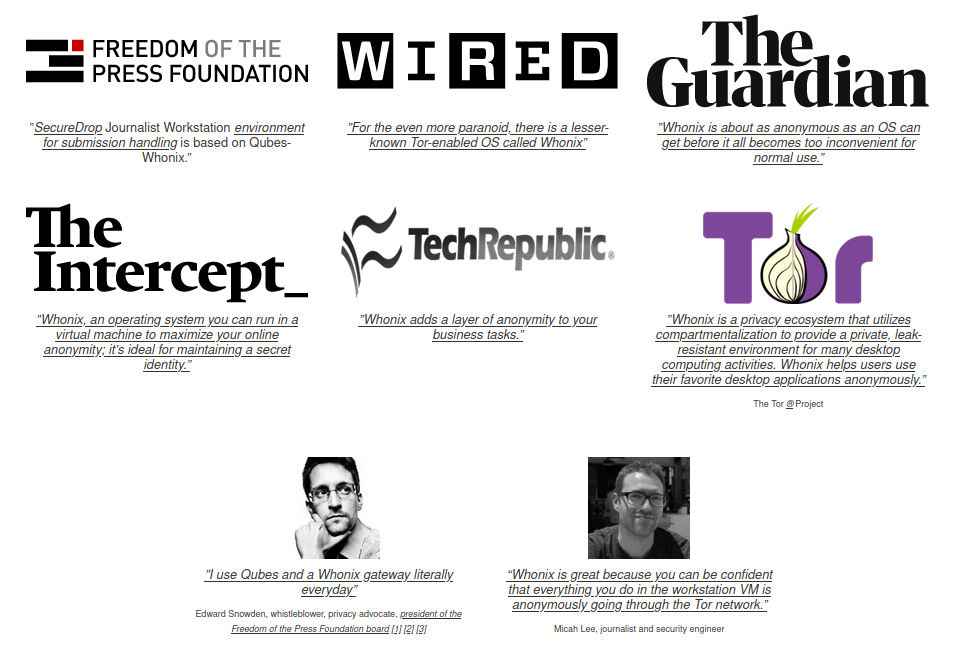
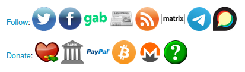

Problematic behavior from the Whonix project
April 5, 2022: There is an update at the bottom of the post.
Content warning: This blog post mentions sexual assault and anti-Semitic terrorism.
The first sign that something weird was going on with the Whonix project -- software, which is integrated into the Qubes operating system, that allows you to run anonymous VMs that force all your internet traffic through the Tor network, run primarily by Patrick Schleizer -- was in September 2018 when the project's official Twitter account tweeted, "We miss Jacob Appelbaum."

Jacob Appelbaum is a serial rapist who, in 2016, was kicked out of Tor Project and the internet freedom community after a group of his victims organized to expose him. The link in the Whonix tweet was to a copy of Citizenfour, Laura Poitras's 2014 documentary about Edward Snowden, which featured Appelbaum before he was exposed as a sexual predator.
Whonix promptly deleted the tweet, and the issue was largely forgotten.
Then earlier this year someone reached out to me on Mastodon, the open source federated social network, to point out that the Whonix project has an account on Gab.

Gab is a white supremacist social network which was founded in 2016 in an alt-right cesspool but really gained infamy in 2018 after it came out that Robert Bowers, the neo-Nazi that murdered 11 people in a terrorist attack at a synagogue in Pittsburgh, was an avid user.
Until today, I was indeed on the front page of the Whonix website (quoting an article I wrote for the Intercept about VMs), along with Snowden and quotes from a bunch of organizations that I think might not be happy with associating with Whonix if they knew about the project's apparent fascist sympathies.

Screenshot from the whonix.org homepage
And the footer of every page on the Whonix wiki, which is the majority of whonix.org, has a prominent link to Gab.

Screenshot from the footer of the Whonix wiki
After reading that toot (in Mastodon, tweets are called "toots") I meant to contact Patrick Schleizer and ask him what's going on with Whonix's Gab profile and see if he has an explanation, but I got busy and forgot about it until a few months later.
Last month, Nina Alter, a user experience designer that works with the Qubes and SecureDrop projects, pinged me on Signal to ask some questions about Whonix. She was working on securing funding to improve Whonix's usability. When I told her about how Whonix has an account on Gab and promotes it in the footer of their website, she was quite naturally disturbed.
Before writing her grant proposal, Nina wanted to get to the bottom of it. She emailed Patrick saying that the affiliation with Gab is a major concern that must be addressed before continuing with the grantwriting, but he never emailed back. Nina did not write the grant proposal.
Miguel Jacq is a freelance system administrator and an OnionShare developer who has been doing freelance devops work for the Whonix project for a few years. He was also recently made aware of Whonix's Gab connection, so he contacted Patrick expressing concern that Whonix was associating itself with a neo-Nazi social network, envisaging that it could harm the reputation of the project. Patrick never responded to this concern.
"I find difficulty aligning my own personal ethics regarding the matter, with the merits of participating in what has otherwise been to date an important and rewarding project," Miguel told me. "I don't really believe Patrick holds any extreme right-wing views, so for me it makes no sense to have that presence on Gab. Whonix does really important work, but software is political. It's not fun as a left-wing person to have people approach me saying 'Why are you involved with that project, they seem to endorse Gab'. I can't just ignore that and say the software alone matters."
Earlier this month, Miguel formally stepped down from working with Whonix.
On June 14, I wrote Patrick an encrypted email myself asking about the project's affiliation with Gab and demanding that they either stop this affiliation or remove my name and photo from the Whonix website:
Hey Patrick,
A few people have pointed out to me that the footer on the Whonix wiki includes a social media link to Whonix's Gab profile. Why does Whonix have an account on an explicitly racist, neo-Nazi social network? The people who run Gab don't in any way actually give a shit about "free speech" -- it's just a transparent excuse to be able to grow their fascist movement within liberal democracies, but luckily most people aren't falling for it.
I don't feel comfortable associating with fascists or in any way supporting their movements. Can you delete the Whonix Gab account, which only has 38 followers anyway, and remove the link to Gab from the wiki? Or if you don't want to do that, can you remove my name, photo, and quote from the homepage of whonix.org?
He never responded to my email. But last week he updated the code of the Whonix website to remove my quote, and today he deployed the update, so I'm no longer on the homepage anymore.
I've heard from other people who work in open source digital security tools that they have also contacted Patrick and the Whonix project about this.
Whonix could have possibly had a logical explanation for using and promoting Gab. Like, maybe Patrick believed the disingenuous marketing about Gab being a free speech social network rather than an explicitly neo-Nazi one.
But if that were the case, he sure isn't answering anyone's questions. Instead, he's steadfastly refusing to budge or explain himself, despite funders and contractors fleeing the project because they don't want to work with fascists.
==
April 5, 2022 Update
After talking with Tempest (@JetBlackCloud on Twitter), I decided to change the title of this blog post from "Is the Whonix project run by fascists?" to "Problematic behavior from the Whonix project" because it's more accurate.
I also wanted to provide some updates:
Whonix removed a link to its Gab account from its website in late 2020. The first version of the Whonix site captured by the Internet Archive that removed the link to Gab was on October 30, 2020, four months after this post was published. The project still technically has a Gab account but it hasn't posted since November 20, 2021, while it still consistently posts to its Twitter account.
I'm not sure why Whonix decided to stop using Gab, but my guess is for the reason that should have been obvious from the beginning: It makes the project look bad.
According to Tempest, the "We miss Jacob Appelbaum" tweet was posted by a problematic Whonix moderator called TNT_BOM_BOM, which is why the tweet ended with "^TNT". That checks out. TNT also signed some of the posts to Gab. Based on his forum posts, TNT is still an active Whonix community members.
Patrick never responded to me or the people I quoted in this blog post, and as far as I can tell, the Whonix project ever really responded to this at all (other than I guess eventually stop using Gab). The closest thing that can be found to a response was in this forum thread where the user torjunkie points out some new additions to the wiki:
- Whonix added an Unsubstatiated Conclusions section to its wiki that says, "Users must be careful not to draw incorrect conclusions based on the existence of specific Whonix ™ communication channels, community software utilized, applications installed on the platform, or the availability of certain wiki entries."
- Whonix added a Selection of Platforms section to its wiki that says that one of the "non-criteria" for picking a platform to create an account on is "ethical or political considerations," and that creating an account is not an endorsement of that social network.
I also never found any technical issues with the Whonix project. It's open source and appears to follow best practices. I don't think the problematic behavior says anything about whether or not its safe to rely on Whonix. While I think parts of Whonix are a bit over-engineered, I still use it myself inside Qubes.
Gab has changed in the years since then too. It was founded by explicit neo-Nazis in the aftermath of the deadly 2017 Charlottesville fascist protest as part of the alt-tech movement, but now it's home to a more diverse far-right audience including people who aren't explicitly fascist, like MAGA/Stop the Steal/QAnon conspiracy types and anti-vaxxers.